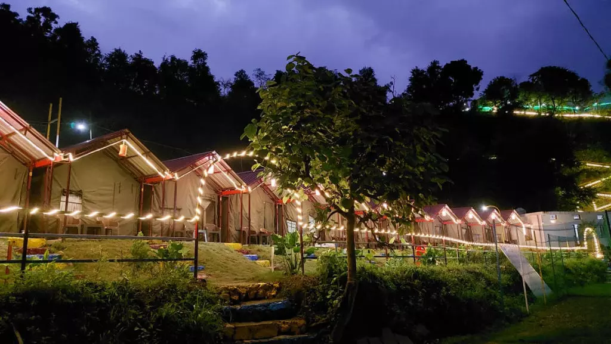
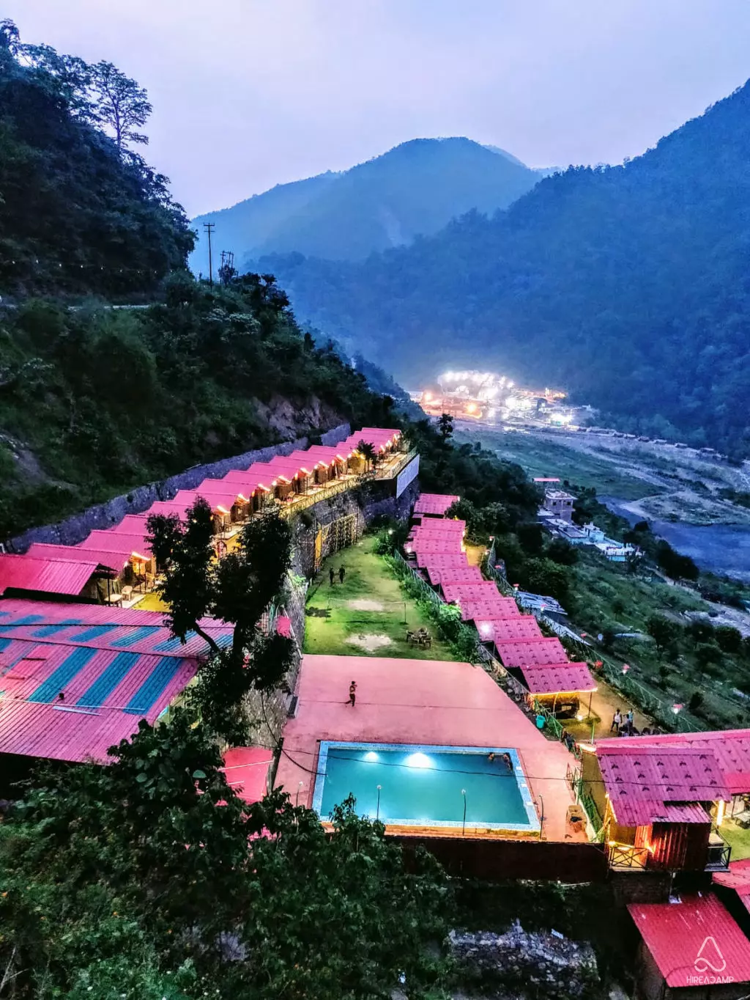
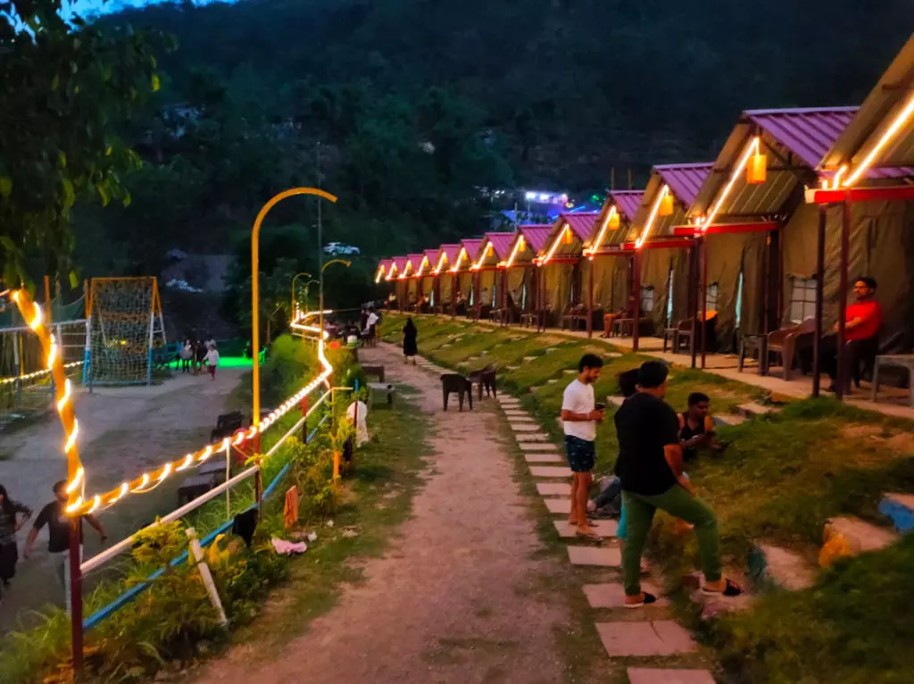
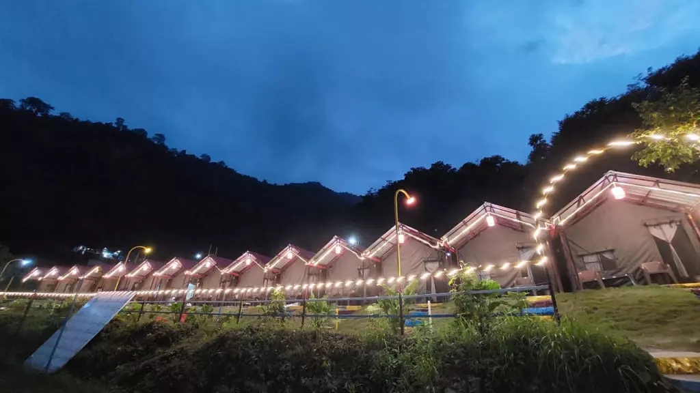
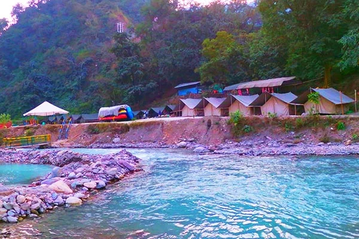
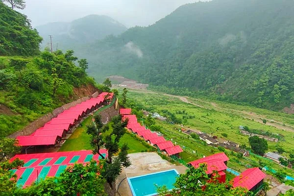
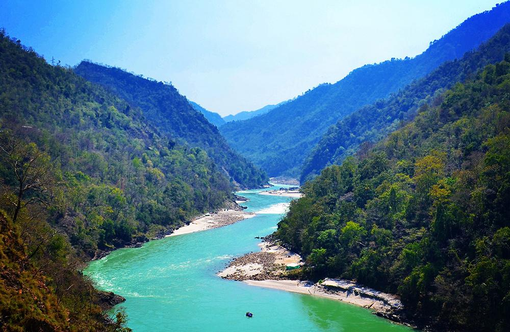

Shivpuri is a small but vibrant village located about 16 km upstream from Rishikesh along the banks of the holy Ganga River. It is widely regarded as the starting point for the most popular and thrilling white-water rafting stretches in Rishikesh (Marine Drive to Rishikesh or Shivpuri to Rishikesh). Surrounded by lush green hills, dense pine forests, and the roaring rapids of the Ganga, Shivpuri offers a perfect blend of adrenaline-pumping adventure and peaceful Himalayan serenity.
The area is dotted with riverside camps offering rafting, camping, bonfires, cliff jumping, and riverside yoga — making it a favorite among adventure seekers, backpackers, and families looking for a nature escape. The name “Shivpuri” reflects its spiritual roots, with the Ganga flowing powerfully here and small temples and ashrams adding to the divine vibe. Whether you come for the rapids, the sunsets over the river, or simply to unwind by the water, Shivpuri captures the raw beauty and wild spirit of Devbhoomi Uttarakhand.
September to May — ideal water levels for rafting (Grade III–IV rapids), pleasant weather, and clear skies. Avoid monsoon (June–August) due to high currents and safety risks.
Starting point for famous rafting stretches, riverside camping, bonfires under stars, cliff jumping, body surfing, scenic Ganga views, and nearby bungee jumping at Jumpin Heights.
Book rafting/camping packages in advance, wear quick-dry clothes, carry sunscreen & water, choose certified operators, and stay for sunset — the river views are magical.
"Shivpuri is where the wild Ganga roars and the Himalayas whisper — a sacred playground of adventure, peace, and the untamed spirit of Devbhoomi."